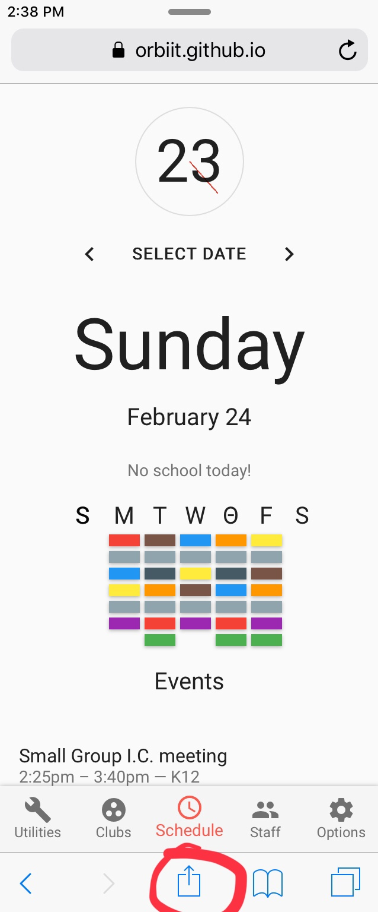
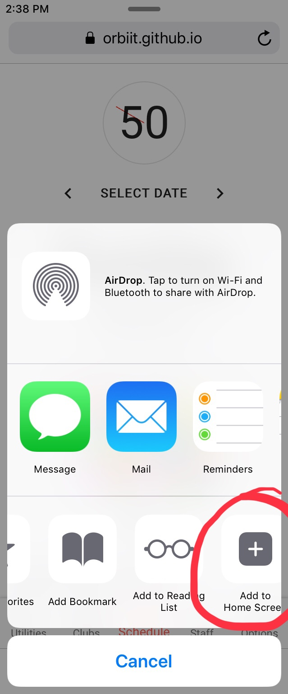
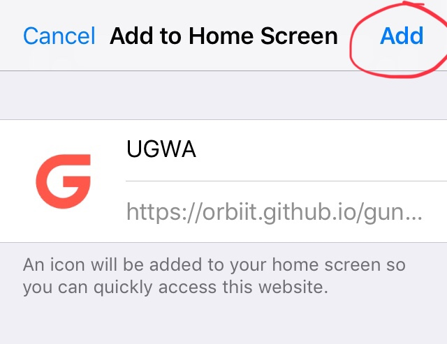
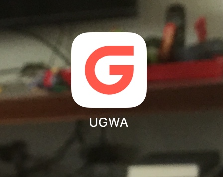

Make sure you are using iOS Safari, not iOS Chrome or the Google Search app.
Click on the "Share" button. On iPhones it's at the bottom; on iPads it's at the top. Its icon looks like an arrow pointing upwards from the inside of a box.
Select "Add to Home Screen"; its icon is a rounded square with a plus sign in the centre. You might have to scroll right a bit to find it. This option will not appear if you use iOS Chrome.
Click "Add" and UGWA will appear on your home screen.
